5G/xG Research Papers, Code, & Open Datasets
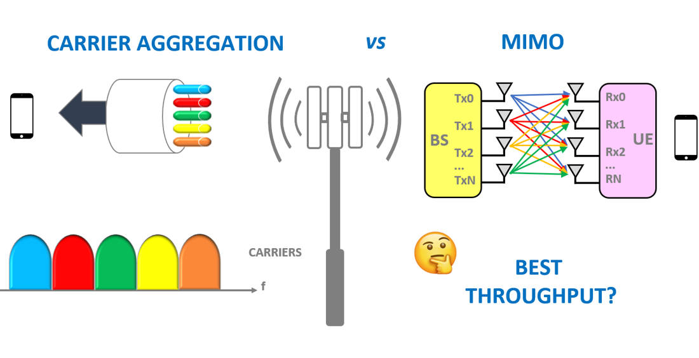
Disentangling the Throughput Contributions of MIMO and Carrier Aggregation in 5G Networks
This study presents the first comparative analysis of MIMO vs. carrier aggregation (CA) throughput gains in operational 5G, using commercial smartphones across all three U.S. operators on a 5,700+ km LA→Boston drive. We map current deployments, disentangle their combined effects to quantify each technology's contribution, and examine scaling across higher MIMO ranks and multi-carrier aggregation.
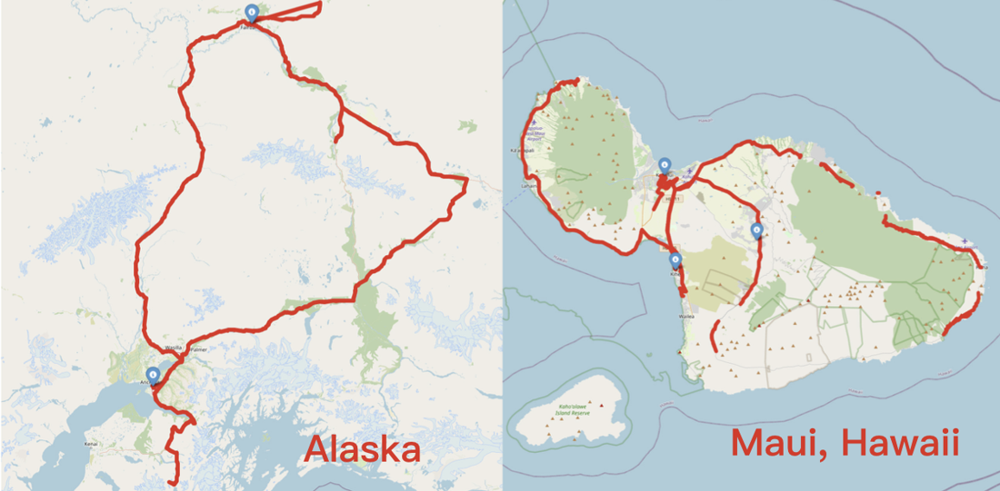
Exploring the 5G Digital Divide in the Non-Contiguous US: LEO Satellites to the Rescue?
This study delivers the first detailed evaluation of cellular and Starlink performance in non-contiguous U.S. regions, using 4,200+ km of drive tests across Alaska, Maui, and a mainland baseline (three operators + Starlink). We find a persistent cellular digital divide; while Starlink typically outperforms cellular networks, it is hindered by region-specific factors (Hawaii terrain, sparse satellites in Alaska). We also quantify cellular–Starlink spatiotemporal diversity and the potential of multipath transport to bridge connectivity gaps.
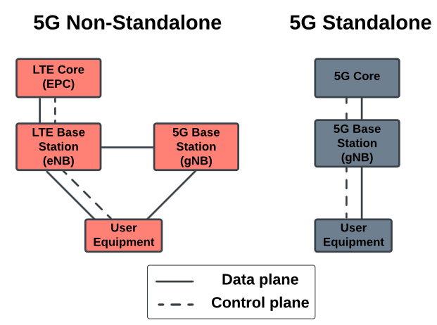
A First Large-Scale Study of Operational 5G Standalone Networks
This study provides the first large-scale U.S. evaluation of 5G Standalone (SA) from two cross-country drive tests (3,200+ km; 2023–2024), directly comparing SA and NSA. We find a clear shift toward SA — broader rollout and advanced features (higher-order CA, new bands/duplexing) deliver superior performance over NSA's plateau — and quantify handover durations and uplink power control across both modes.
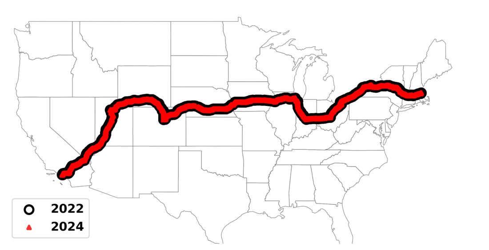
Replication: Performance of Cellular Networks on the Wheels
This study replicates our ACM IMC 2023 work, comparing U.S. cellular coverage and performance from 2022 to 2024 along the same route. While coverage and performance have improved, two of the three major operators still deliver under 50% 5G coverage along the route. We also compare cellular networks with Starlink's LEO satellite service.
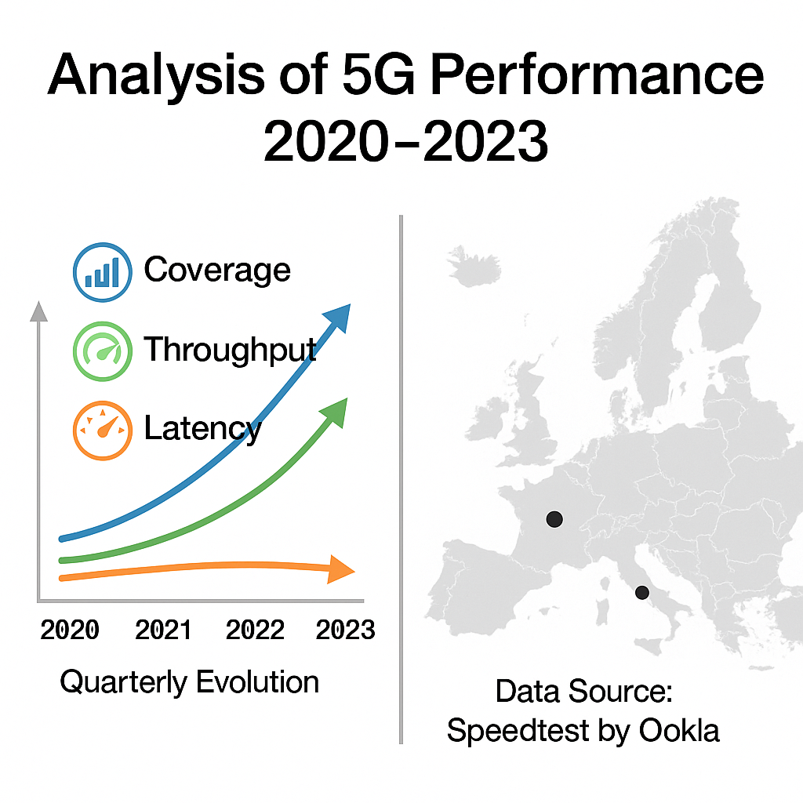
5G Metamorphosis: A Longitudinal Study of 5G Performance from the Beginning
This study conducts the first longitudinal "metamorphosis" analysis of 5G, using 2.65M+ Ookla Speedtest measurements across nine U.S. and European cities from 2020–2023. We reveal the evolution of 5G coverage, throughput, and latency at quarterly granularity, compare cross-city performance diversity, and uncover factors influencing user experience, including device adoption and network load.
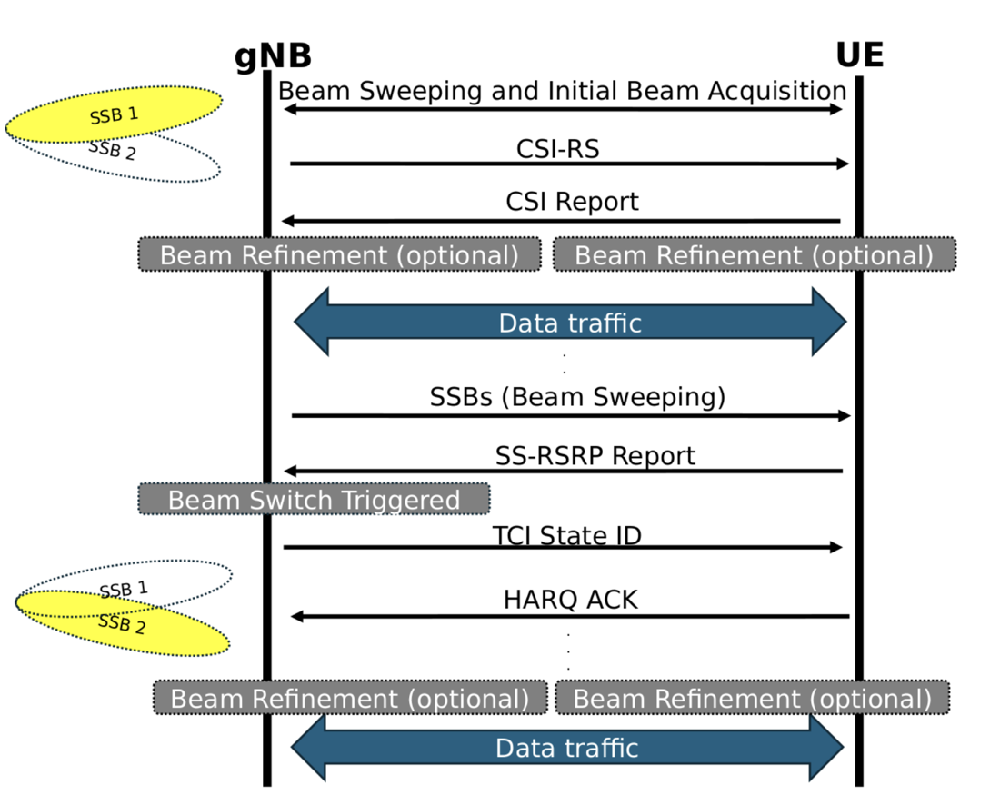
Vivisecting Beam Management in Operational 5G mmWave Networks
This study presents the first in-depth empirical analysis of beam management in commercial 5G mmWave networks across two major U.S. operators and six cities. We evaluate key parameters, mobility scenarios, and interactions with rate adaptation and carrier aggregation, revealing the overhead and effectiveness of real-world beam tracking.
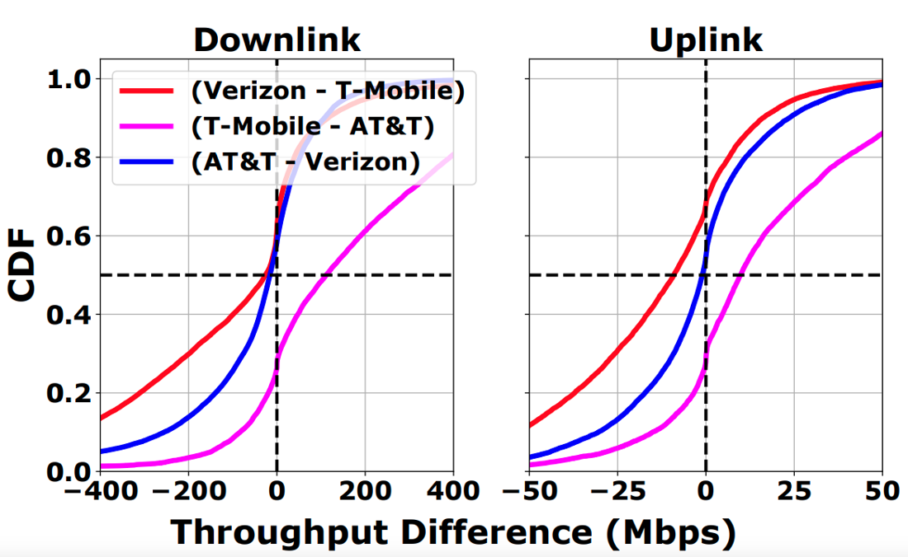
A Large-Scale Study of the Potential of Multi-Carrier Access in the 5G Era
This study explores the potential of multi-carrier access in cellular networks through an 8,000+ km cross-country measurement campaign across all three major U.S. operators. We find substantial performance diversity across operators at a given location and time; trace-driven analysis shows that link selection and aggregation techniques offer significant gains over single-operator performance.
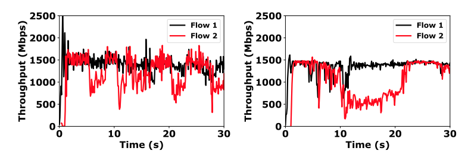
Demystifying Resource Allocation Policies in Operational 5G mmWave Networks
This study presents the first systematic analysis of resource allocation policies in commercial 5G mmWave networks, based on measurements across four U.S. cities and two major operators. We find that operators employ simple threshold-based policies and often over-allocate resources to new flows with low traffic demands or reserve capacity for future usage – policies that vary not only among operators but also for a single operator across cities.
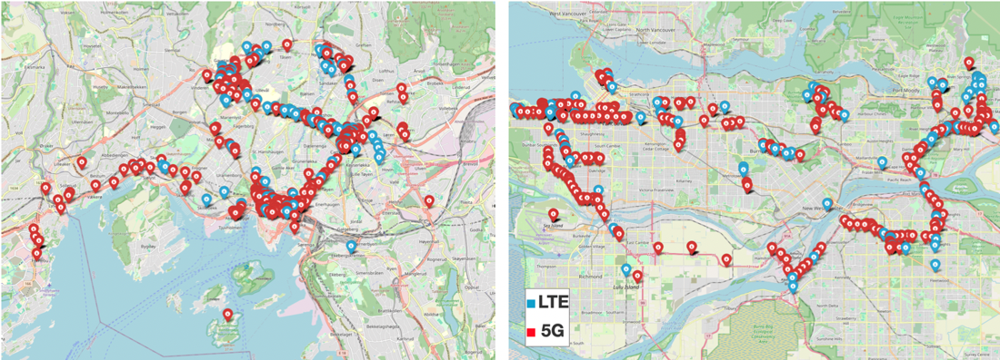
How Mature is 5G Deployment? A Cross-Sectional, Year-Long Study of 5G Uplink Performance
This study assesses 5G deployment maturity through a year-long uplink measurement campaign: a crowd-sourced study across eight cities in Europe and North America, and a controlled mmWave study in Boston. Our datasets show 5G deployment in major cities has largely matured, with no major improvements over a one-year period, yet 5G doesn't consistently outperform LTE — especially in latency — and performance remains uneven across the 8 cities.
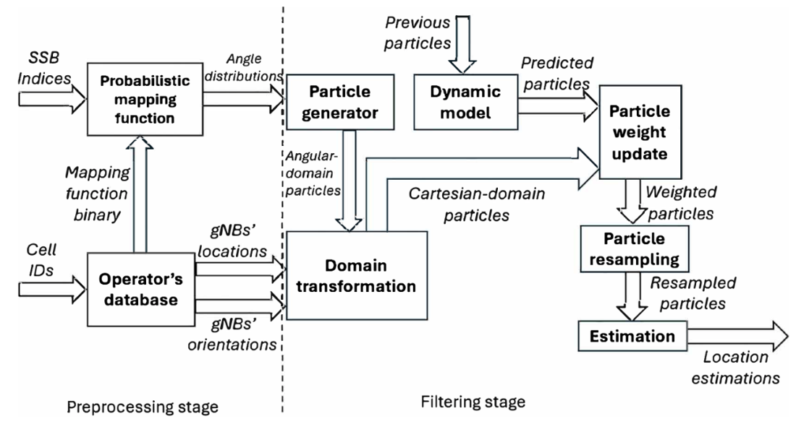
mm-NOLOC: mmWave-based Localization for Mobile Networks without 3GPP Location Service
This work introduces a UE-centric localization system that leverages 5G mmWave infrastructure to provide accurate positioning in dense urban areas without relying on 3GPP location support. Using only UE-side control-plane information (SSB indices mapped to beam directions) and particle filtering, real-world experiments show sub-3 m median accuracy and under 10 m at the 95th percentile.
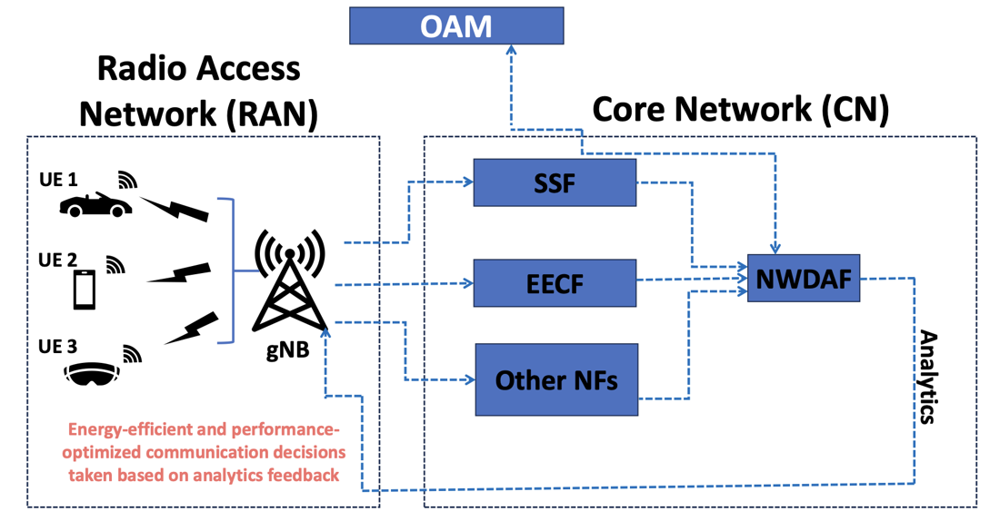
AI/ML-Based Sensing-Assisted Energy-Efficient Communications in Next-Gen Cellular Networks
This work explores integrating Integrated Sensing and Communication (ISAC) with the 5G Network Data Analytics Function (NWDAF) to address performance variability and high energy consumption in 5G. We introduce two new functions — a Sensing Service Function (SSF) and an Energy Efficiency Control Function (EECF) — that optimize base station transmit power to balance latency and energy use.
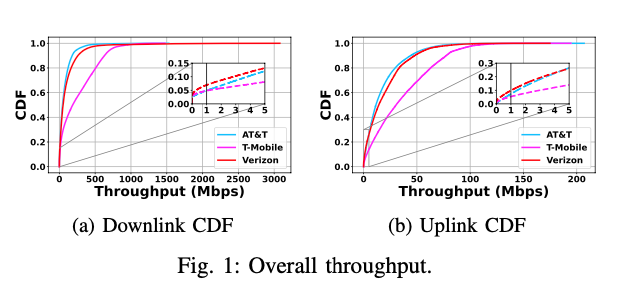
Root Cause Analysis of Cellular Network Throughput Degradations under Vehicular Mobility
This study analyzes 3,687 km of U.S. drive tests across three operators and multiple radio technologies, introducing a KPI-driven clustering method to quantify and attribute mobility-induced throughput degradations. We find persistently higher uplink degradation than downlink, technology-specific vulnerability signatures (LTE vs. 5G), and predominantly compound mechanisms where multiple factors interact.
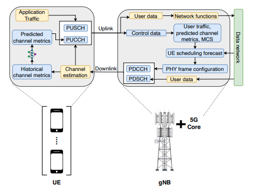
Enabling Emerging Applications in 5G Through UE-Assisted Proactive PHY Frame Configuration
This work investigates whether legacy 5G networks can meet the stringent demands of applications like XR and factory automation, given the limitations of fixed TDD frame configurations. We propose a machine-learning-enabled framework that dynamically reconfigures PHY frames based on real-time channel predictions; validation on a 3GPP-compliant 5G testbed shows it consistently outperforms fixed configurations.
Performance of Cellular Networks on the Wheels
This is the first study to present a cross-continental 5G measurement campaign (LA to Boston, 5,700+ km) evaluating coverage, network performance, and user experience of latency-sensitive applications under real driving conditions. Our findings revealed fragmented 5G coverage and poor application performance even four years into 5G rollout.
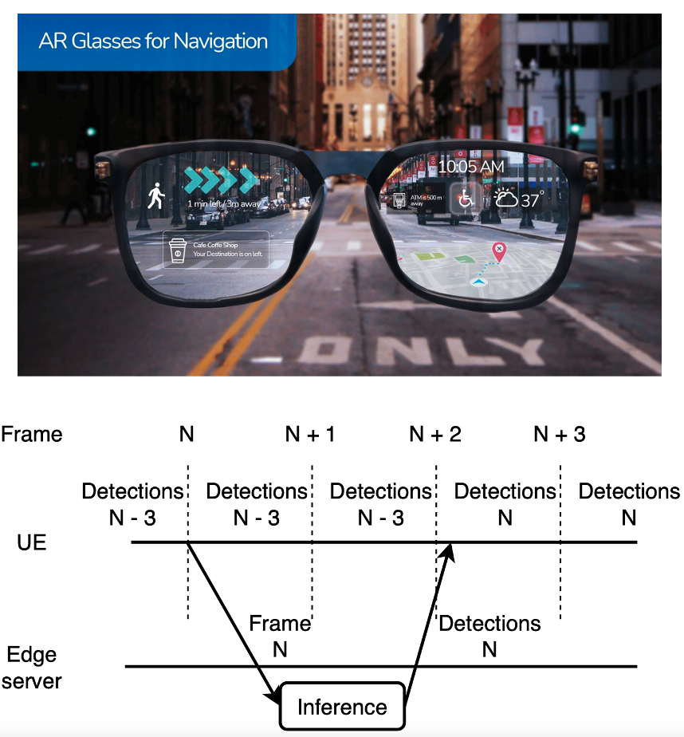
Can 5G mmWave Enable Edge-Assisted Real-Time Object Detection for Augmented Reality?
This study evaluates the feasibility of using 5G mmWave with edge cloud to support latency-critical AR via edge-assisted object detection. We find current 5G mmWave uplink performance is insufficient to meet AR requirements, with only marginal gains over LTE, while app-level optimizations and edge hardware upgrades help but still fall short of enabling robust AR.
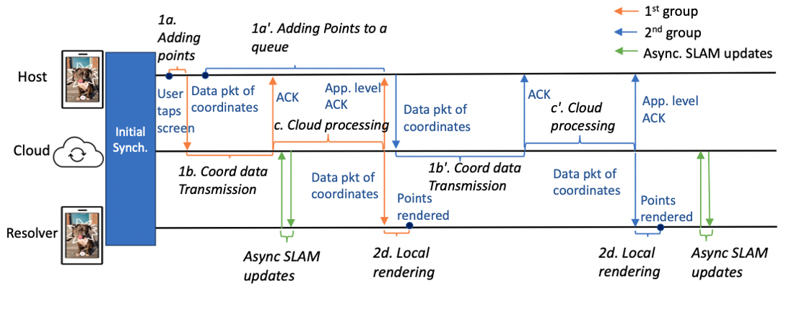
The Power of Asynchronous SLAM in Multi-User AR over Cellular Networks: A Measurement Study
This study revisits the feasibility of multi-user AR over LTE and 5G by analyzing the Just a Line app, which achieves end-to-end latencies of a few hundred milliseconds – sufficient for real-time interaction. We show that performance differences across popular AR apps stem from their architectural choices for SLAM, with asynchronous vs. synchronous updates leading to drastically different user experiences.
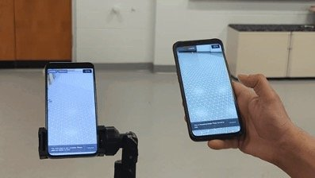
Can 5G mmWave Support Multi-User AR?
This study examines whether 5G mmWave can support multi-user AR via an in-depth measurement of a popular AR app over both LTE and 5G mmWave. While 5G mmWave reduces uplink visual data transmission latency, overall end-to-end latency remains too high for practical interaction, and the app consumes 66% more network energy and 28% more total energy on mmWave than LTE – offering no real benefit for multi-user AR.
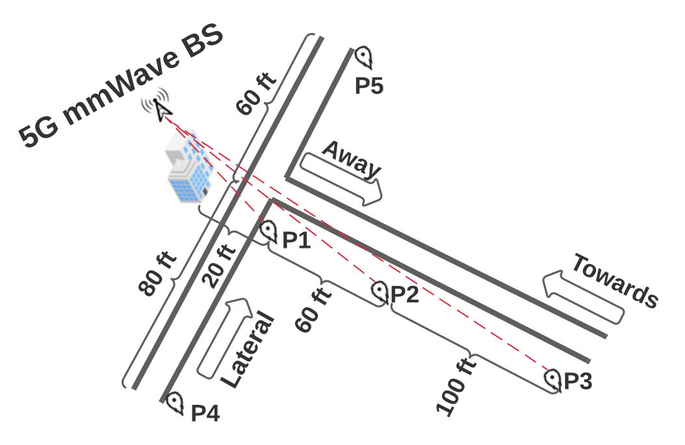
An In-Depth Study of Uplink Performance of 5G mmWave Networks
This study presents a systematic analysis of uplink performance in commercial 5G mmWave networks across three U.S. cities and two operators. While 5G mmWave offers substantially higher bandwidth and lower latency than LTE, its performance is geographically inconsistent and often suboptimal for latency-critical applications — our control- and PHY-level analysis reveals challenges that call for design and deployment optimizations.